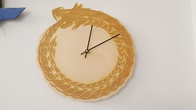
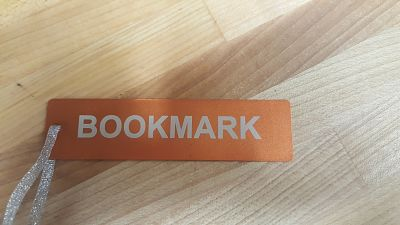
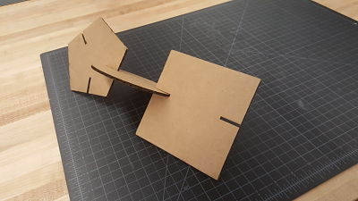

This roation we used the laser cutter to creat a clock, bookermark and connectable shapes. For software we used Coreldraw to create designs with cutting and engraving on the cutter.
For each object we used different materials in the laser cutter.


